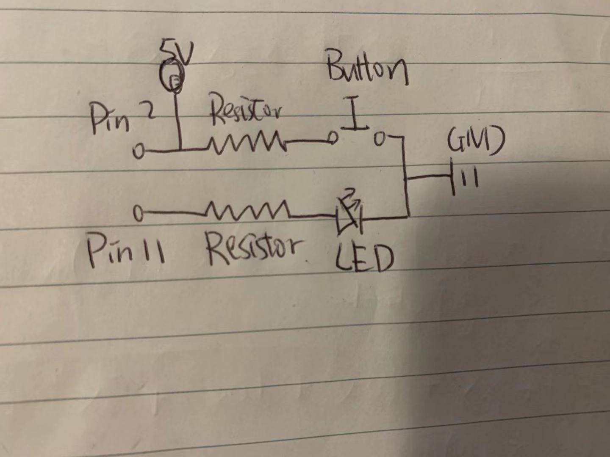
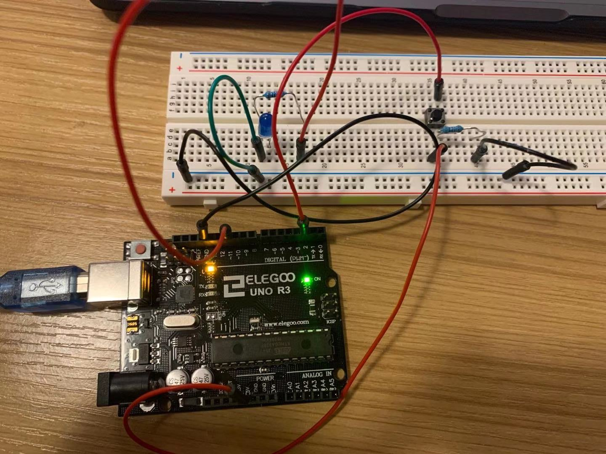

Assignment 2: Fade
Schematic
The schematic demonstrates how I accomplish making three LED fades. First, connect LED and button to a separate Pin on Arduino. Second, connect the button to 5V. Third, add resistors to the circuit to drop the voltage on LED and button to prevent LED and button from breaking. Finally, Connect the LED and Button back to GND on Arduino.
Circuit
In this assignment, I used blue LED with 220K resistor and a button with 10K resistor. The voltage drop of each LED is around 1.6 ohms. The current flows through the LED would be around (5V - 1.6V) / A x 220K ohms which is 0.015mA. This is in the desired current range. For the button, the reason why I use a 10K resistor is to make sure when the button is not pressed, the voltage across the button is not zero and it's not breaking anything.
Firmware
Circuit's operation

When users press on the button, the LED fade from brightness 0 to 150, then 150 to 0 in 3 seconds. Otherwise, the LED is turned off.